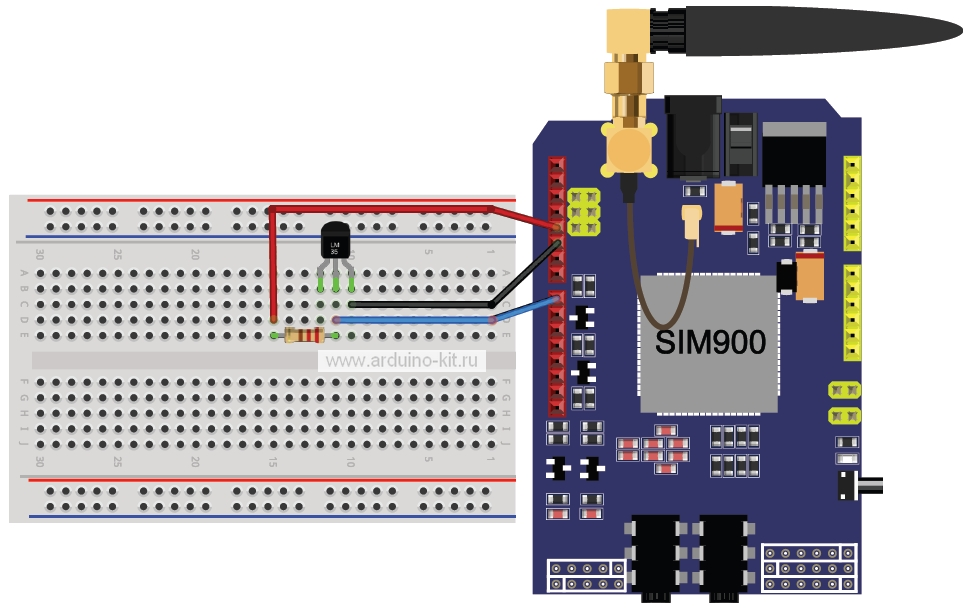

Блог ● Проект 32: Беспроводная связь. Модуль GSM/GPRS SIM900
● Проект 32: Беспроводная связь. Модуль GSM/GPRS SIM900
Опубликовано: 23.04.2018
В этом эксперименте рассмотрим работу модуля GSM/GPRS shield – платы расширения, позволяющей Arduino работать в сетях сотовой связи по технологиям GSM/GPRS для приёма и передачи данных, SMS и голосовой связи.
Необходимые компоненты:
• контроллер Arduino UNO R3;
• плата для прототипирования;
• GSM/GPRS shield;
• работающая SIM-карта любого оператора;
• датчик температуры LM335;
• резистор 2,2 кОм;
• провода папа-папа.
• блок питания +5 в 1 А;
GSM/GPRS shield на базе модуля SIMCom SIM900 выпускают несколько производителей, и платы имеют незначительные отличия. Также на некоторых платах расположены: слот для SIM-карты, стандартные 3,5 мм джек для аудиовхода и выхода и разъём для внешней антенны. На плате GSM/GPRS shild имеется несколько перемычек, позволяющих выбрать тип serial-соединения (hardware или software). GSM/GPRS shield имеет два способа включения – аппаратный (кратковременное нажатие кнопки PWRKEY) и программный (используется один из выходов Arduino). Рассмотрим пример отправки и получения SMS-сообщений с помощью GSM/GPRS shield. Каждые 30 минут будем отправлять на определенный номер показания аналогового датчика температуры LM335, подсоединенного к выводу A0. Схема соединений эксперимента показана на рис. 32.1.

Рис. 32.1. Схема подключения модуля GSM/GPRS shield и датчика LM335. Шилд SIM900 установлен на Arduino UNO
Содержимое скетча для отправки SMS показано в листинге 32.1.
// подключение библиотеки SoftwareSerial
#include <SoftwareSerial.h>
// номер телефона для отправки sms (поменяйте на свой)
#define PHONE "+79031111111"
// Выводы для SoftwareSerial (у вас могут быть 7,8)
SoftwareSerial Sim900Serial(2, 3);
const int lm335=A0; // для подключения LM335
unsigned long millis1;
void setup()
{
Sim900Serial(19200); // the Hardware serial rate
}
void loop()
{
if (millis()-millis1>30*60*1000) // прошло 30 минут?
{
SendTextMessage(); // отправить sms
millis1=millis();
}
}
// подпрограмма отправки sms
void SendTextMessage()
{
// AT-команда установки text mode
Sim900Serial.print("AT+CMGF=1\r");
delay(100);
// номер телефона получателя
Sim900Serial.println("AT + CMGS = \"");
Sim900Serial.println(PHONE);
Sim900Serial.println("\"");
delay(100);
// сообщение – данные температуры
double val = analogRead(lm335); // чтение
double voltage = val*5.0/1024; // перевод в вольты
double temp = voltage*100 - 273.15; // в градусы Цельсия
Sim900Serial.println(temp);
delay(100);
// ASCII код ctrl+z – окончание передачи
Sim900Serial.println((char)26);
delay(100);
Sim900Serial.println();
}
Порядок подключения:
1. Установим SIM-карту на GSM/GPRS Shield, а GSM/GPRS Shield – на Arduino. С помощью джамперов соединим контакты для работы через SoftwareSerial-эмуляцию.
2. Собираем схему, согласно рис. 32.1.
3. Загружаем в плату Arduino скетч из листинга 32.1.
4. На телефон, указанный в скетче, раз в 30 минут должны приходить sms-сообщения с данными температуры. Теперь изменим скетч таким образом, чтобы Arduino отправляла sms-сообщение с данными температуры только при получении при- ходящего сообщения с текстом «temp».
Содержимое скетча показано в листинге 32.2.
#include <SoftwareSerial.h>
SoftwareSerial Sim900Serial(2, 3);
String currStr = ""; //
String phone = ""; //
// True, если текущая строка является sms-сообщением
boolean isStringMessage = false;
void setup()
{
Serial.begin(19200);
Sim900Serial.begin(19200);
// Настраиваем приём сообщений с других устройств
Sim900Serial.print("AT+CMGF=1\r");
delay(300);
Sim900Serial.print("AT+IFC=1, 1\r");
delay(300);
Sim900Serial.print("AT+CPBS=\"SM\"\r");
delay(300);
Sim900Serial.print("AT+CNMI=1,2,2,1,0\r");
delay(500);
}
void loop()
{
if (!Sim900Serial.available())
return;
char currSymb = Sim900Serial.read();
if ('\r' == currSymb)
{
if (isStringMessage) // текущая строка - sms-сообщение,
{
if (!currStr.compareTo("temp")) // текст sms - temp
{
// отправить sms на приходящий номер
Sim900Serial.print("AT+CMGF=1\r");
delay(100);
Sim900Serial.print("AT + CMGS = \"");
Sim900Serial.print(phone);
Sim900Serial.println("\"");
delay(100);
double val = analogRead(A0); // чтение
double voltage = val*5.0/1024; // перевод в вольты
double temp = voltage*100 - 273.15; // в градусы Цельсия
Serial.println(temp);
Sim900Serial.println(temp);
delay(100);
Sim900Serial.println((char)26);
delay(100);
Sim900Serial.println();
}
Serial.println(currStr);
isStringMessage = false;
}
else
{
if (currStr.startsWith("+CMT")) {
Serial.println(currStr);
// выделить из сообщения номер телефона
phone=currStr.substring(7,19);
Serial.println(phone);
// если текущая строка начинается с "+CMT",
// то следующая строка является сообщением
isStringMessage = true;
}
}
currStr = "";
}
else if ('\n' != currSymb)
{
currStr += String(currSymb);
}
Листинги программ скачать
�
{kind=link}